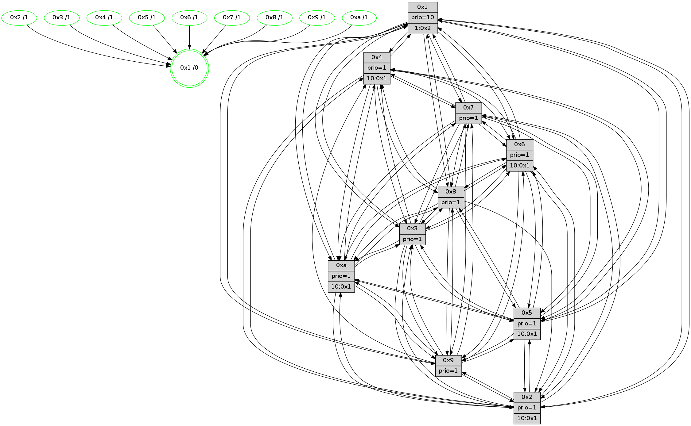

>> << IDX [start] -100 -25 -5 +0 +5 +25 +100 [505.620551109]
 Previous packets
----------------------------------------------------------------------
500.103636 beacon01(faad) #0 coord=01,02,03,04,05,06,07,0a,09,08 cycle=688.0ms assoc
-- color-indic=1 64 38 48
500.113618 beacon02(faad) #0 coord=01,02,03,04,05,06,07,0a,09,08 cycle=688.0ms assoc 64 ab 79
500.123618 beacon03(faad) #0 coord=01,02,03,04,05,06,07,0a,09,08 cycle=688.0ms assoc 64 d1 34
500.133618 beacon04(faad) #0 coord=01,02,03,04,05,06,07,0a,09,08 cycle=688.0ms assoc 64 a6 de
500.143619 beacon05(faad) #0 coord=01,02,03,04,05,06,07,0a,09,08 cycle=688.0ms assoc 64 dc 93
500.153618 beacon06(faad) #0 coord=01,02,03,04,05,06,07,0a,09,08 cycle=688.0ms assoc 64 52 44
500.163620 beacon07(faad) #0 coord=01,02,03,04,05,06,07,0a,09,08 cycle=688.0ms assoc 64 28 09
500.173623 beacon0a(faad) #0 coord=01,02,03,04,05,06,07,0a,09,08 cycle=688.0ms assoc 64 59 02
500.183623 beacon09(faad) #0 coord=01,02,03,04,05,06,07,0a,09,08 cycle=688.0ms assoc 64 d7 d5
500.193626 beacon08(faad) #0 coord=01,02,03,04,05,06,07,0a,09,08 cycle=688.0ms assoc 64 ad 98
500.205196 [Hello(1): seq=231 sym=4,2,9,5,10,3,8,6,7 sysInfo=coloring-mode-on,ColoringModeRequestCalled stat=4:2,2,6,4/2:14,1,7,5/9:11,2,7,3/5:9,1,7,4/10:14,2,6,1/3:0,2,8,5/8:4,2,9,3/6:15,2,9,2/7:7,2,9,2]
500.207930 [Color(5) seq=2 @0:0 prio=1]
500.209191 [Color(10) seq=2 @0:0 prio=1]
500.210508 [Hello(6): seq=322 sym=2,3,5,4,7,9,8,10,1 sysInfo=coloring-mode-on,ColoringModeIndicationCalled stat=2:7,0,6,3/3:8,1,4,2/5:11,0,4,3/4:10,1,3,2/7:3,1,4,0/9:8,2,4,2/8:3,1,5,2/10:4,1,6,1/1:9,2,7,0]
500.213326 [Color(6) seq=2 @0:0 prio=1]
500.214589 [Color(8) seq=2 @0:0 prio=1]
500.218098 [Color(9) seq=2 @0:0 prio=1]
500.219525 [Color(3) seq=2 @0:0 prio=1]
500.221157 [Color(4) seq=2 @0:0 prio=1]
500.224006 [Color(2) seq=2 @0:0 prio=1 >10.@1,1.@3,1.@4,1.@5]
500.227106 [Hello(7): seq=322 sym=2,3,5,6,4,8,9,10,1 sysInfo=coloring-mode-on,ColoringModeIndicationCalled stat=2:9,0,6,5/3:4,0,6,4/5:6,0,6,4/6:3,1,5,2/4:1,1,3,3/8:3,1,5,2/9:5,1,5,3/10:4,1,6,1/1:8,2,6,0]
500.229931 [Color(7) seq=2 @0:0 prio=1]
----------------------------------------------------------------------
500.891766 beacon01(faad) #0 coord=01,02,03,04,05,06,07,0a,09,08 cycle=688.0ms assoc
-- color-indic=1 64 84 4d
500.901748 beacon02(faad) #0 coord=01,02,03,04,05,06,07,0a,09,08 cycle=688.0ms assoc 64 17 7c
500.911748 beacon03(faad) #0 coord=01,02,03,04,05,06,07,0a,09,08 cycle=688.0ms assoc 64 6d 31
500.921749 beacon04(faad) #0 coord=01,02,03,04,05,06,07,0a,09,08 cycle=688.0ms assoc 64 1a db
500.931749 beacon05(faad) #0 coord=01,02,03,04,05,06,07,0a,09,08 cycle=688.0ms assoc 64 60 96
500.941749 beacon06(faad) #0 coord=01,02,03,04,05,06,07,0a,09,08 cycle=688.0ms assoc 64 ee 41
500.951750 beacon07(faad) #0 coord=01,02,03,04,05,06,07,0a,09,08 cycle=688.0ms assoc 64 94 0c
500.961755 beacon0a(faad) #0 coord=01,02,03,04,05,06,07,0a,09,08 cycle=688.0ms assoc 64 e5 07
500.971754 beacon09(faad) #0 coord=01,02,03,04,05,06,07,0a,09,08 cycle=688.0ms assoc 64 6b d0
500.981753 beacon08(faad) #0 coord=01,02,03,04,05,06,07,0a,09,08 cycle=688.0ms assoc 64 11 9d
500.992963 [Hello(5): seq=323 sym=7,6,4,3,1,9,8,10,2 sysInfo=coloring-mode-on,ColoringModeIndicationCalled stat=7:7,3,6,1/6:12,3,6,1/4:10,3,1,1/3:6,2,0,0/1:0,2,8,0/9:9,3,3,1/8:11,3,4,0/10:5,2,2,1/2:10,1,2,2]
500.996936 [Hello(9): seq=266 sym=5,2,3,4,7,6,10,1 sysInfo=coloring-mode-on,ColoringModeIndicationCalled stat=5:12,0,3,4/2:8,1,4,2/3:0,1,3,2/4:2,1,1,2/7:12,2,6,1/6:5,0,5,2/10:9,1,3,1/1:9,2,8,0]
501.000937 [Hello(4): seq=323 sym=5,7,6,2,3,9,8,10,1 sysInfo=coloring-mode-on,ColoringModeIndicationCalled stat=5:3,0,6,4/7:8,2,7,1/6:15,1,5,2/2:10,1,3,3/3:11,1,5,3/9:5,2,4,3/8:14,1,6,2/10:14,1,3,1/1:15,2,10,0]
501.003321 [Color(1) seq=3 @0:0 prio=10 >1.@2,1.@3,1.@4,1.@5]
501.005104 [Hello(8): seq=266 sym=5,2,3,4,7,6,9,10,1 sysInfo=coloring-mode-on,ColoringModeIndicationCalled stat=5:12,0,5,3/2:5,1,4,3/3:4,1,3,4/4:12,2,2,2/7:10,2,7,2/6:2,1,7,2/9:13,2,4,2/10:9,0,2,1/1:9,2,9,0]
501.008110 [Hello(10): seq=255 sym=6,3,2,8,9,5,7,4,1 sysInfo=coloring-mode-on,ColoringModeIndicationCalled stat=6:2,2,6,1/3:7,1,4,3/2:1,1,3,4/8:10,3,6,2/9:3,2,3,2/5:11,0,5,3/7:8,2,5,1/4:10,2,1,3/1:4,2,8,0]
501.010646 [Hello(3): seq=323 sym=1,7,6,2,4,8,9,10,5 sysInfo=coloring-mode-on,ColoringModeIndicationCalled stat=1:12,3,8,0/7:15,3,6,2/6:10,1,5,2/2:10,1,3,4/4:15,2,2,2/8:5,2,5,1/9:3,2,5,2/10:15,2,5,1/5:14,0,6,3]
501.014943 [Hello(2): seq=320 sym=4,5,7,6,3,9,10,1 sysInfo=coloring-mode-on,ColoringModeIndicationCalled stat=4:14,2,2,1/5:13,1,4,3/7:5,3,6,1/6:11,2,5,1/3:9,1,3,2/9:0,0,0,0/10:11,2,3,1/1:13,2,8,0]
----------------------------------------------------------------------
501.679896 beacon01(faad) #0 coord=01,02,03,04,05,06,07,0a,09,08 cycle=688.0ms assoc
-- color-indic=1 64 40 43
501.689878 beacon02(faad) #0 coord=01,02,03,04,05,06,07,0a,09,08 cycle=688.0ms assoc 64 d3 72
501.699879 beacon03(faad) #0 coord=01,02,03,04,05,06,07,0a,09,08 cycle=688.0ms assoc 64 a9 3f
501.709879 beacon04(faad) #0 coord=01,02,03,04,05,06,07,0a,09,08 cycle=688.0ms assoc 64 de d5
501.719879 beacon05(faad) #0 coord=01,02,03,04,05,06,07,0a,09,08 cycle=688.0ms assoc 64 a4 98
501.729880 beacon06(faad) #0 coord=01,02,03,04,05,06,07,0a,09,08 cycle=688.0ms assoc 64 2a 4f
501.739880 beacon07(faad) #0 coord=01,02,03,04,05,06,07,0a,09,08 cycle=688.0ms assoc 64 50 02
501.749884 beacon0a(faad) #0 coord=01,02,03,04,05,06,07,0a,09,08 cycle=688.0ms assoc 64 21 09
501.759885 beacon09(faad) #0 coord=01,02,03,04,05,06,07,0a,09,08 cycle=688.0ms assoc 64 af de
501.769885 beacon08(faad) #0 coord=01,02,03,04,05,06,07,0a,09,08 cycle=688.0ms assoc 64 d5 93
501.782049 [Hello(1): seq=232 sym=4,2,9,5,10,3,8,6,7 sysInfo=coloring-mode-on,ColoringModeRequestCalled stat=4:2,3,6,4/2:15,2,7,5/9:11,3,7,3/5:10,2,7,4/10:15,3,6,1/3:1,3,8,5/8:5,3,9,3/6:0,3,9,2/7:8,3,9,2]
501.786501 [Color(3) seq=3 @0:0 prio=1]
501.787922 [Color(10) seq=3 @0:0 prio=1]
501.789202 [Color(2) seq=3 @0:0 prio=1 >10.@1,1.@3,1.@4,1.@5]
501.791760 [Hello(6): seq=323 sym=2,3,5,4,7,9,8,10,1 sysInfo=coloring-mode-on,ColoringModeIndicationCalled stat=2:8,1,6,3/3:9,2,4,2/5:12,0,4,3/4:11,2,3,2/7:4,2,4,0/9:9,3,4,2/8:4,2,5,2/10:5,1,6,1/1:10,2,7,0]
501.795417 [Color(4) seq=3 @0:0 prio=1]
501.797276 [STC(1) #0.12 stable,to-color d=0]
501.799496 [Color(6) seq=3 @0:0 prio=1]
501.802135 [Hello(7): seq=323 sym=2,3,5,6,4,8,9,10,1 sysInfo=coloring-mode-on,ColoringModeIndicationCalled stat=2:10,0,6,5/3:5,0,6,4/5:7,0,6,4/6:3,1,5,2/4:2,1,3,3/8:4,1,5,2/9:6,1,5,3/10:5,1,6,1/1:9,2,6,0]
501.806567 [Color(7) seq=3 @0:0 prio=1]
501.815100 [Color(8) seq=3 @0:0 prio=1]
----------------------------------------------------------------------
502.468028 beacon01(faad) #0 coord=01,02,03,04,05,06,07,0a,09,08 cycle=688.0ms assoc
-- color-indic=1 64 fc 46
502.478010 beacon02(faad) #0 coord=01,02,03,04,05,06,07,0a,09,08 cycle=688.0ms assoc 64 6f 77
502.488009 beacon03(faad) #0 coord=01,02,03,04,05,06,07,0a,09,08 cycle=688.0ms assoc 64 15 3a
502.498010 beacon04(faad) #0 coord=01,02,03,04,05,06,07,0a,09,08 cycle=688.0ms assoc 64 62 d0
502.508010 beacon05(faad) #0 coord=01,02,03,04,05,06,07,0a,09,08 cycle=688.0ms assoc 64 18 9d
502.518014 beacon06(faad) #0 coord=01,02,03,04,05,06,07,0a,09,08 cycle=688.0ms assoc 64 96 4a
502.528012 beacon07(faad) #0 coord=01,02,03,04,05,06,07,0a,09,08 cycle=688.0ms assoc 64 ec 07
502.538017 beacon0a(faad) #0 coord=01,02,03,04,05,06,07,0a,09,08 cycle=688.0ms assoc 64 9d 0c
502.548016 beacon09(faad) #0 coord=01,02,03,04,05,06,07,0a,09,08 cycle=688.0ms assoc 64 13 db
502.558016 beacon08(faad) #0 coord=01,02,03,04,05,06,07,0a,09,08 cycle=688.0ms assoc 64 69 96
502.569820 [Hello(9): seq=267 sym=5,2,3,4,7,6,8,10,1 sysInfo=coloring-mode-on,ColoringModeIndicationCalled stat=5:12,0,3,4/2:9,2,4,2/3:1,2,3,2/4:3,2,1,2/7:13,3,6,1/6:6,1,5,2/8:0,1,0,0/10:10,2,3,1/1:10,2,9,0]
502.572477 PARSE ERROR************************
Traceback (most recent call last):
File "PacketAnalysis.py", line 167, in showOperaPacket
structPacket = OperaPacketParse.parsePacket(rawPacket)
File "../../pkg-python/HipSens/Core/OperaPacketParse.py", line 461, in parsePacket
return parseHelloMessage(data)
File "../../pkg-python/HipSens/Core/OperaPacketParse.py", line 109, in parseHelloMessage
sysInfo,stability,colorInfo = struct.unpack("!HBB", linkList[0:4])
error: unpack requires a string argument of length 4
48 30 02 00 01 41 00 02 02 10 04 00 05 00 07 00 06 00 03 00 09 00 0a 00 01 00 53 04 00 14 00 00 4c 10 12 3e 34 1d 16 46 15 3c 23 19 00 00 13 2b 09 2e 53 19
502.578160 [STC(5)->1 #0.12 stable,to-color d=1]
502.579674 [Hello(10): seq=256 sym=6,3,2,8,9,5,7,4,1 sysInfo=coloring-mode-on,ColoringModeIndicationCalled stat=6:3,3,6,1/3:8,1,4,3/2:2,2,3,4/8:10,4,6,2/9:3,2,3,2/5:11,0,5,3/7:9,3,5,1/4:10,3,1,3/1:5,2,9,0]
502.582184 [TreeStatus(5)-.->1 #0.12 stable child=1]
502.583755 [STC(10)->1 #0.12 stable,to-color d=1]
502.587115 [Hello(8): seq=267 sym=5,2,3,4,7,6,9,10,1 sysInfo=coloring-mode-on,ColoringModeIndicationCalled stat=5:12,0,5,3/2:6,1,4,3/3:5,1,3,4/4:12,2,2,2/7:10,2,7,2/6:2,1,7,2/9:13,2,4,2/10:10,0,2,1/1:10,2,9,0]
502.589663 [STC(3)->1 #0.12 stable,to-color d=1]
502.592196 [STC(4)->1 #0.12 stable,to-color d=1]
502.595485 [Color(1) seq=4 @0:0 prio=10 >1.@2,1.@3,1.@4,1.@5]
502.597493 [STC(9)->1 #0.12 stable,to-color d=1]
----------------------------------------------------------------------
503.256158 beacon01(faad) #0 coord=01,02,03,04,05,06,07,0a,09,08 cycle=688.0ms assoc
-- color-indic=1 64 e8 28
503.266141 beacon02(faad) #0 coord=01,02,03,04,05,06,07,0a,09,08 cycle=688.0ms assoc 64 7b 19
503.276141 beacon03(faad) #0 coord=01,02,03,04,05,06,07,0a,09,08 cycle=688.0ms assoc 64 01 54
503.286143 beacon04(faad) #0 coord=01,02,03,04,05,06,07,0a,09,08 cycle=688.0ms assoc 64 76 be
503.296142 beacon05(faad) #0 coord=01,02,03,04,05,06,07,0a,09,08 cycle=688.0ms assoc 64 0c f3
503.306141 beacon06(faad) #0 coord=01,02,03,04,05,06,07,0a,09,08 cycle=688.0ms assoc 64 82 24
503.316143 beacon07(faad) #0 coord=01,02,03,04,05,06,07,0a,09,08 cycle=688.0ms assoc 64 f8 69
503.326146 beacon0a(faad) #0 coord=01,02,03,04,05,06,07,0a,09,08 cycle=688.0ms assoc 64 89 62
503.336147 beacon09(faad) #0 coord=01,02,03,04,05,06,07,0a,09,08 cycle=688.0ms assoc 64 07 b5
503.346146 beacon08(faad) #0 coord=01,02,03,04,05,06,07,0a,09,08 cycle=688.0ms assoc 64 7d f8
503.357074 [Hello(1): seq=233 sym=4,2,9,5,10,3,8,6,7 sysInfo=coloring-mode-on,ColoringModeRequestCalled stat=4:2,3,6,4/2:15,2,7,5/9:12,3,8,3/5:10,2,7,4/10:15,3,6,1/3:1,3,8,5/8:5,4,9,3/6:0,4,9,2/7:9,4,9,2]
503.361940 [Hello(7): seq=324 sym=2,3,5,6,4,8,9,10,1 sysInfo=coloring-mode-on,ColoringModeIndicationCalled stat=2:11,0,6,5/3:5,0,7,4/5:7,0,7,5/6:3,1,5,2/4:2,1,4,3/8:5,2,5,2/9:7,1,6,3/10:6,1,6,1/1:10,3,6,0]
503.365498 [Color(10) seq=4 @0:0 prio=1]
503.366889 [Color(2) seq=4 @0:0 prio=1 >10.@1,1.@3,1.@4,1.@5]
503.368829 [Color(3) seq=4 @0:0 prio=1]
503.371760 [Color(7) seq=4 @0:0 prio=1]
503.373358 [Hello(6): seq=324 sym=2,3,5,4,7,9,8,10,1 sysInfo=coloring-mode-on,ColoringModeIndicationCalled stat=2:9,1,6,3/3:10,2,5,2/5:12,0,5,4/4:11,2,4,2/7:5,3,4,0/9:10,3,5,2/8:5,3,5,2/10:6,1,7,1/1:11,3,7,0]
503.376819 [Color(6) seq=4 @0:0 prio=1]
503.381951 [Color(5) seq=4 @0:0 prio=1 >10.@1,1.@2,1.@3,1.@4]
----------------------------------------------------------------------
504.044289 beacon01(faad) #0 coord=01,02,03,04,05,06,07,0a,09,08 cycle=688.0ms assoc
-- color-indic=1 64 54 2d
504.054270 beacon02(faad) #0 coord=01,02,03,04,05,06,07,0a,09,08 cycle=688.0ms assoc 64 c7 1c
504.064271 beacon03(faad) #0 coord=01,02,03,04,05,06,07,0a,09,08 cycle=688.0ms assoc 64 bd 51
504.074272 beacon04(faad) #0 coord=01,02,03,04,05,06,07,0a,09,08 cycle=688.0ms assoc 64 ca bb
504.084271 beacon05(faad) #0 coord=01,02,03,04,05,06,07,0a,09,08 cycle=688.0ms assoc 64 b0 f6
504.094273 beacon06(faad) #0 coord=01,02,03,04,05,06,07,0a,09,08 cycle=688.0ms assoc 64 3e 21
504.104273 beacon07(faad) #0 coord=01,02,03,04,05,06,07,0a,09,08 cycle=688.0ms assoc 64 44 6c
504.114276 beacon0a(faad) #0 coord=01,02,03,04,05,06,07,0a,09,08 cycle=688.0ms assoc 64 35 67
504.124277 beacon09(faad) #0 coord=01,02,03,04,05,06,07,0a,09,08 cycle=688.0ms assoc 64 bb b0
504.134277 beacon08(faad) #0 coord=01,02,03,04,05,06,07,0a,09,08 cycle=688.0ms assoc 64 c1 fd
504.149789 [Hello(3): seq=325 sym=1,7,6,2,4,8,9,10,5 sysInfo=coloring-mode-on,ColoringModeIndicationCalled stat=1:14,4,9,0/7:0,5,6,2/6:12,3,5,2/2:11,2,3,4/4:15,3,3,2/8:5,3,5,1/9:3,2,6,2/10:15,3,5,1/5:14,1,6,3]
504.156145 [Color(1) seq=5 @0:0 prio=10 >1.@2,1.@3,1.@4,1.@5]
504.158906 [Hello(4): seq=325 sym=5,7,6,2,3,8,10,1 sysInfo=coloring-mode-on,ColoringModeIndicationCalled stat=5:3,1,6,4/7:10,4,7,1/6:0,3,5,2/2:11,2,3,3/3:12,2,5,3/8:15,2,6,2/10:15,2,3,1/1:1,4,11,0]
504.161899 [Hello(8): seq=268 sym=5,2,3,4,7,6,9,10,1 sysInfo=coloring-mode-on,ColoringModeIndicationCalled stat=5:12,1,5,3/2:6,2,4,3/3:5,2,4,4/4:12,2,3,2/7:10,3,7,2/6:3,2,7,2/9:13,2,5,2/10:10,0,2,1/1:11,3,9,0]
504.171178 [Hello(9): seq=268 sym=5,2,3,4,7,6,8,10,1 sysInfo=coloring-mode-on,ColoringModeIndicationCalled stat=5:12,1,3,4/2:9,3,4,2/3:1,3,3,2/4:3,2,1,2/7:14,4,6,1/6:7,2,5,2/8:0,2,0,0/10:10,2,3,1/1:11,2,9,0]
----------------------------------------------------------------------
504.832420 beacon01(faad) #0 coord=01,02,03,04,05,06,07,0a,09,08 cycle=688.0ms assoc
-- color-indic=1 64 90 23
504.842403 beacon02(faad) #0 coord=01,02,03,04,05,06,07,0a,09,08 cycle=688.0ms assoc 64 03 12
504.852403 beacon03(faad) #0 coord=01,02,03,04,05,06,07,0a,09,08 cycle=688.0ms assoc 64 79 5f
504.862403 beacon04(faad) #0 coord=01,02,03,04,05,06,07,0a,09,08 cycle=688.0ms assoc 64 0e b5
504.872403 beacon05(faad) #0 coord=01,02,03,04,05,06,07,0a,09,08 cycle=688.0ms assoc 64 74 f8
504.882403 beacon06(faad) #0 coord=01,02,03,04,05,06,07,0a,09,08 cycle=688.0ms assoc 64 fa 2f
504.892405 beacon07(faad) #0 coord=01,02,03,04,05,06,07,0a,09,08 cycle=688.0ms assoc 64 80 62
504.902409 beacon0a(faad) #0 coord=01,02,03,04,05,06,07,0a,09,08 cycle=688.0ms assoc 64 f1 69
504.912408 beacon09(faad) #0 coord=01,02,03,04,05,06,07,0a,09,08 cycle=688.0ms assoc 64 7f be
504.922412 beacon08(faad) #0 coord=01,02,03,04,05,06,07,0a,09,08 cycle=688.0ms assoc 64 05 f3
504.934610 [Hello(1): seq=234 sym=4,2,9,5,10,3,8,6,7 sysInfo=coloring-mode-on,ColoringModeRequestCalled stat=4:3,3,6,4/2:15,3,7,5/9:13,4,8,3/5:10,3,7,4/10:0,4,6,1/3:1,4,8,5/8:6,4,9,3/6:1,5,9,2/7:10,5,9,2]
504.939070 [Hello(6): seq=325 sym=2,3,5,4,7,9,8,10,1 sysInfo=coloring-mode-on,ColoringModeIndicationCalled stat=2:9,1,6,3/3:11,2,5,2/5:12,1,5,4/4:12,2,4,2/7:5,3,4,0/9:11,3,5,2/8:6,3,5,2/10:7,1,7,1/1:12,4,7,0]
504.941942 [Color(10) seq=5 @0:0 prio=1 >10.@1,1.@2,1.@3,1.@4]
504.944646 [Color(4) seq=5 @0:0 prio=1 >10.@1,1.@2,1.@3,1.@5]
504.946689 [Color(8) seq=5 @0:0 prio=1]
504.949111 [Hello(7): seq=325 sym=2,3,5,6,4,8,9,10,1 sysInfo=coloring-mode-on,ColoringModeIndicationCalled stat=2:11,0,6,5/3:6,0,7,4/5:7,1,7,5/6:4,2,5,2/4:3,1,4,3/8:6,2,5,2/9:8,1,6,3/10:7,1,6,1/1:11,4,6,0]
504.953226 [Color(2) seq=5 @0:0 prio=1 >10.@1,1.@3,1.@4,1.@5]
504.955086 [Color(6) seq=5 @0:0 prio=1 >10.@1,1.@2,1.@3,1.@4]
504.957518 [Color(7) seq=5 @0:0 prio=1]